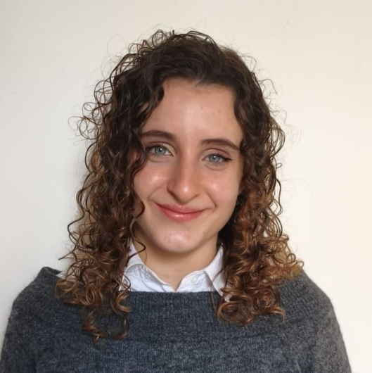

Logopedista, Ordine TSRM-PSTRP – Albo dei Logopedisti di Siena, n. iscrizione 93
Staggia (SI), Italia
logopedista.flavia.giambrone@gmail.com | Patente B/
P.iva 06135510520
COSA OFFRO:
- Valutazione e trattamento dei Disturbi Primari del Linguaggio
- Valutazione e trattamento della Deglutizione atipica
- Trattamento dei Disturbi Specifici dell’Apprendimento
- Valutazione e trattamento Afasia
- Sostegno domiciliare Disturbi dello Spettro autistico
- Trattamento e valutazione ritardi del linguaggio
DOVE?
- A domicilio
- Colle di Val d'Elsa, via Antonio Gramsci 73
- San Rocco a Pilli, Piazza Peruzzi 4
Per prenotazioni chiamare qui: 346 278 7740
PRIMO colloquio gratuito